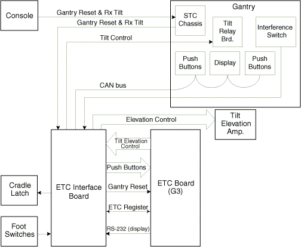
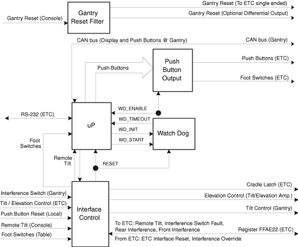
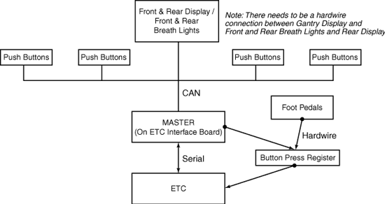
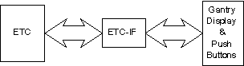
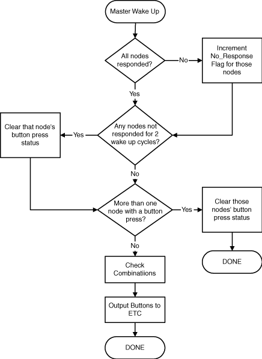
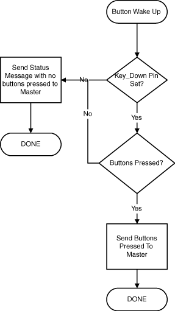
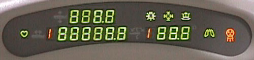
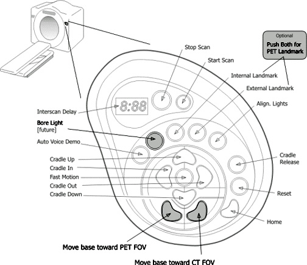
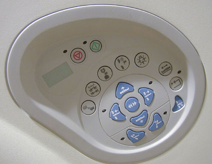

Proprietary to General Electric
Direction 5114045-800, Rev# 10
LightSpeed 4.X Service Information (Advanced)
Proprietary to General Electric |
| Last Revised on: | October 12, 2004 |
The functions performed by the electronics within the table include:
Control of Gantry tilt
Table elevation
Table cradle longitudinal drives
Please refer to Illustration 1, below, and Illustration 2, as reference for the table theory.
Patient positioning is done manually through the gantry mounted operator controls. The drives provide horizontal and vertical positioning of the patient. Longitudinal motion of the cradle provides horizontal positioning through the scan plane. During scanning modes, longitudinal position is controlled by the ETC computer and control board. Longitudinal motion can also be controlled with console pushbuttons used to advance the patient to the next scan position. An additional feature is Prescribed Remote Tilt functionality.
Illustration 1: Table Block Diagram

Control of this closed loop drive system is provided by the ETC computer, control and interface boards. Interlocks and enables are set by a table/gantry interference matrix and firmware. The drive amplifier is supplied with 170vdc and creates a three-phase half-wave rectified drive voltage that is pulse width modulated at a switching frequency of 17 khz. The resulting output is supplied through enable and motor select relays to the table elevation drive motor. The control circuit has no adjustments.
Elevation feedback is provided by a 6:1 geared encoder and is converted to elevation information by the ETC control board firmware. The encoder turns one complete revolution over the entire table elevation range. Control signals are routed via the ETC-IF board, where the signal enabling elevation is intercepted and another enable is created so that the interface board can also disable elevation if the interference sensor is in fault or interference is detected. Tilt control signals, forward and backward, are decoded and routed to the tilt relay board via the ETC-IF. Tilt position feedback is provided by a 5-turn potentiometer.
| POTENTIAL PINCH HAZARD | |
| TABLE ELEVATION UTILIZE GAS SPRINGS TO ASSIST IN ELEVATION MOTION. GANTRY TILT USES HYDRAULIC CONTROL SYSTEM FOR GANTRY MOTION. | |
| ALWAYS FOLLOW THE DOCUMENTED REPLACEMENT PROCEDURES FOR COMPONENTS WITHIN THESE DRIVES SYSTEMS TO AVOID INJURY DURING THE REPLACEMENT OF THESE COMPONENTS. |
Control of this closed loop drive system is provided by a single chip motion controller, located on the ETC control board. The controller sets velocity, direction, acceleration, and position. The drive amplifier is supplied with 24vdc and creates a three-phase half-wave rectified drive voltage that is pulse width modulated at a switching frequency of 17 khz. The resulting output is supplied through an enable relay to the cradle drive motor. The motor turns a drive roller at the front of the table that the cradle rests on, thus causing the cradle to move.
Direction and speed feedback is supplied by an encoder and a 10-turn potentiometer driven by a cable and spool assembly attached to the cradle mounting hardware. The cradle encoder outputs approximately 10 pulses per mm of cradle movement and makes 8 full revolutions over the full cradle range. The potentiometer determines which of the 8 revolutions the encoder is in. A tachometer is used for additional stabilization of the control loop. There are no adjustments for this control loop.
Once a patient landmark has been set, changing the table elevation by using the gantry mounted pushbuttons will result in the cradle moving in or out so that the position of the cradle in the gantry opening and patient landmark remain unchanged. This auto move correction does not occur if the elevation is changed with the foot switches or if a landmark has not been set.
Depressing the gantry mounted operator control cradle release switch will cause the cradle to float freely. This allows the operator to pull the cradle and patient back to the foot end latch position, in case of a patient emergency. Depressing the cradle release switch again will cause the drive to engage and enable the cradle to be driven away from the latched position.
The table provides an interface between the gantry mounted operator emergency off control and reset switches and the Power distribution unit. If an emergency off switch is depressed, table elevation, cradle longitudinal, gantry axial, HV primary supply, and gantry tilt drives are disabled and the reset light will begin flashing at a slow frequency. Depressing the reset switch will once again enable the drives.
Firmware sends position and other status information through this interface to the System Host Control.
The Gantry Display Board is centered on top of the Gantry, directly above the table opening. It is controlled via a CAN network, located on the ETC-IF (Enhanced Table Controller Interface) circuit board.
Table Sync Generation is used to inform the axial controller that the table has reached the start of scan position for scout scans.
The CAN network is the communications interface for the gantry display and control panels. The network supports four (4) control panels: two (2) each on front and rear gantry covers. The CAN network requires the gantry display and one (1) control panel for successful initialization. Upon power-up the ETC-IF tests communications to the gantry display and controllers. Faults are reported as node failures.
Additionally, a watchdog circuit disables out-going pushbutton signals, from the ETC-IF board, if the microprocessor gets hung up. The watchdog needs to be reset every 150 ms. See Illustration 2.
After a board reset (including power-on), the watchdog is disabled. The microprocessor must create a rising edge on the start_wd line. Then the watchdog can be reset by a rising edge on the init_wd line followed by a rising edge on the start_wd line. If these two edges are not seen in order or before the watchdog times-out, the watchdog will disable all pushbuttons and assert the wd_timedout line to the microprocessor.
Illustration 2: ETC-IF Functional Block Diagram

Elevation switches are magnetic reed switches located at the top and bottom of the elevation linear actuator assembly. Cradle limit switches are mechanical switches located at either extreme end of cradle movement. Firmware ensures that these extreme positions are never achieved. The limit positions can be achieved during the characterization process or firmware/hardware failure.
Tape switches are located at positions where it is possible for patient extremity injury during positioning. If any of these switches are depressed, cradle longitudinal, table elevation, and gantry tilt drives are disabled and the gantry operator control panel reset light will flash at a fast frequency. Removing the table side covers will activate this circuitry as well. A jumper plug is provided under the side covers, to enable the drive circuits for service purposes. Depressing the gantry operator control reset switch will once again enable these drives.
Sensors are mounted on the front and rear of the gantry. When a sensor is not pressed, the impedance is 20 kOhms. When a sensor is pressed, the resistance becomes near Zero (0) Ohms. This signal will be decoded on the ETC-IF board, first to indicate that the maximum impedance of the sensor is 40 kOhms (fault condition). Second that the sensor is not a short circuit (interference condition). This is done for both front and rear sensors. This information is passed through register FFAE22 on the ETC board. If there is interference or a fault condition, both elevation and tilt will be disabled. The ETC board can override this using register FFAE22.
A green LED will indicate that the sensor is not shorted. A yellow LED will indicate that the sensor has more than 40k Ohms of resistance.
The Gantry side pushbuttons are located on each side of the gantry. They give the operator manual control of the of drive operations for Patient Positioning and are monitored by the table ETC board via the ETC-IF CAN network.
Used as a safety back-up for a firmware controlled matrix that ensures that the table cradle and gantry never touch each other and any gantry angle, table elevation, or cradle position.
These switches are located at the console SCIM keyboard. The function is Prescribed Remote Tilt, which means that these switches will only tilt the gantry to the prescribed RX position. This feature enhances the productivity of the technologist as they can more easily position the gantry between groups or series prescriptions. For patient safety, the Gantry Mounted Interference Touch Panels will disable gantry motion if any contact is sensed on the surface of these panels.
Two lines must be active to initiate remote tilt. When both lines are active, a signal is sent to the microprocessor. The microprocessor can send the remote tilt indication to the ETC board through register FFAE22. The microprocessor must check for stuck button condition.
The foot switches (up and down) come into the ETC-IF board at J8 directly from the foot pedals. The switches have inverse logic dual path input. When either enable for the foot switch is pressed, the enable (active low) line is sent to the microprocessor. When the up pedal is active, the up signal will be high into the processor. When the down pedal is active, the down signal will be high into the processor.
Table 1: Foot Pedal Truth Table
| UP ENABLE | DOWN ENABLE | UP SWITCH | DOWN SWITCH | ENABLE | UP | DOWN |
|---|---|---|---|---|---|---|
| 0 | 0 | * | * | H | L | L |
| 0 | 1 | 0 | 0 | L | L | L |
| 0 | 1 | 0 | 1 | L | L | H |
| 0 | 1 | 1 | 0 | L | L | L |
| 0 | 1 | 1 | 1 | L | L | H |
| 1 | 0 | 0 | 0 | L | L | L |
| 1 | 0 | 0 | 1 | L | L | L |
| 1 | 0 | 1 | 0 | L | H | L |
| 1 | 0 | 1 | 1 | L | H | L |
| 1 | 1 | 0 | 0 | L | L | L |
| 1 | 1 | 0 | 1 | L | L | H |
| 1 | 1 | 1 | 0 | L | H | L |
| 1 | 1 | 1 | 1 | L | H | H |
The Gantry User Interface consists of a Gantry Display, Gantry Push buttons, and ETC-IF Controller (located on the ETC Interface Board). Each of these new components incorporate a Motorola 6808AZ60 microprocessor. Illustration 3 illustrates the overall design of the Smart Controls.
Illustration 3: Gantry User Interface Design Block Diagram

The Smart Controls system is designed with the ETC-IF Controller as the interface between the ETC and the Gantry elements. The ETC-IF controller is a slave to the ETC and the Gantry components are slaves to the ETC-IF Controller
Illustration 4: Smart Controls Design Block Diagram

The code on all three types of controllers consists of boot code and application code (both residing in Flash Memory). The boot code is always the first to be invoked on a reset. The boot code checks for valid application code through the calculation of a checksum, and if it is found, the application code is started. If not, then the boot code jumps to the boot application loop. The boot application loop has only one purpose, and that is to download code to flash memory.
Several functions are common between the three controllers. These functions are:
Self Tests
Processor Initialization
Communication
Downloading Code
Firmware Revision and Board Revision Reporting
Diagnostic LEDs
Diagnostic Switches
At the time of power-up or reset, the micro-controller performs two self tests:
RAM Check: The micro-controller searches all RAM locations for any possible errors.
Code Corruption Test: A checksum check is performed on the application code to ensure code integrity.
The Gantry User Interface Network could include the following nodes, in the following quantities:
ETC-IF (1)
Push Buttons (5)
Display (1)
Startup/Initialization
Gantry Control
When any Node is reset or powered-up, it begins sending the Gantry Control “I'm Alive” message to the ETC-IF on a periodic basis (every 500 ms). Once the ETC-IF receives that message, it responds by broadcasting the Assign ID message to all Control nodes, in which a specific board number, serial number and node ID is embedded. Each Control node checks the message, and if it has its own board number and serial number, then it assigns that node ID to itself. The node, once it receives the command, acknowledges it with an ACK and stop sending the “I'm Alive” message. If more than one node has the same board number and serial number, the ETC-IF logs an error message, but allows them to operate.
Gantry Display
When the display is reset or powered-up, it begins sending the Gantry Display “I'm Alive” message on a periodic basis (every 500 ms) to the ETC-IF. Once the ETC-IF receives that message, it responds with the “Stop Alive Message” command that informs the Gantry Display node that its presence has been detected by the ETC-IF. The node, once it receives the command, acknowledges it with an ACK and stop sending the “I'm Alive” message.
Safety
The Gantry Pushbuttons and Display contain safety critical elements (start scan capability, X-ray On indicator) that require safety to be a major consideration in the CAN network design.
CAN Messages
CAN messages are protected against corruption using several methods. First, a quadruple 8-bit filter algorithm is used by the CPU to register only the messages that are anticipated by that Node. Second, a sequence number is embedded in all messages and is checked by the ETC-IF (to make sure that new sequence numbers are sent) as it receives messages from the nodes to guard against CAN reflections. Finally, a checksum is used in critical messages (such as button presses) to further validate their content.
Display Indicators
The Display indicators are validated by using an associated checksum on the packet to be sent to the Display Node. The Display Node verifies the checksum prior to setting the requested indicators and responds to the ETC-IF to acknowledge the receipt of the message.
Reset Line
A Reset line is available for the ETC-IF to set, if it deems that one or more of the nodes must be reset to correct a problem.
Display Messages
Display Messages must be acknowledged by the node that receives them, whether it is the Pushbutton Node or the Display Node. This is imperative to ensure that node has at least received the message correctly and verified it.
Protocol Definition
The CAN protocol that is used is the CAN 2.0B(extended) protocol, which defines a packet as a 29 bit header and a 0-8 byte long message.
Node IDs and Object IDs
Node IDs are assigned to nodes either on startup from the ETC-IF, or by default in its code as follows:
ETC-IF -> node ID 0
Display -> node ID 1
Controls -> node ID's 2-6
Object IDs are set as follows:
ETC-IF ->0
Control ->1
Display -> 2
| NOTE: | If the Node ID or Device ID are not used in the message header, they are to be defaulted to 0xF. |
The controllers are initialized to operate using both the SCI port and the CAN port.
The SCI port operates at 9600 Baud Rate, using an RS232 driver.
The CAN port operates at 250K Baud Rate. Each of the nodes initialize its acceptance filters based on its device ID and node ID.
The SPI port is a synchronous serial communication port. This port is used to communicate to an EEPROM resident on the board.
Each microprocessor is able to report its firmware number, firmware revision, board number, board revision, and board serial number. The firmware number and revision number are embedded in the firmware code. The board number, revision and serial number are read through the SPI port from an EEPROM located on the board.
Each node has four firmware controllable LEDs, operating differently during application code and boot code.
Application Code
LED 0: Error Code -> This LED blinks an error code, if an error exists. The tens digit blinks at 2Hz and the ones digit blinks at 5Hz.
LED 1: HeartBeat -> This LED blinks at 2Hz, as long as the firmware is running correctly.
LED 2: Connected (for control and display) -> This LED is on solid, as long as the watchdog message between the ETC-IF and the node is not in violation.
LED 2: Button Pressed (for ETC-IF) -> This LED is on solid, whenever the ETC-IF is putting out a bitMask to the ETC with a button pressed.
LED 3: StartProcessing -> This LED is on solid from the point that the Begin Processing Packet is received until a reset occurs.
Boot Code
LED 0: Invalid SREC -> This LED is on solid from the point that an invalid packet is received until a valid written packet is received.
LED 1: HeartBeat -> This LED blinks at 5Hz as long as boot is running and not downloading code. The LED blinks at 3Hz, if the code is writing to FLASH.
LED 2: Data Verification Failure -> This LED is on solid from the point that a packet is not verified in FLASH correctly until a reset occurs.
LED 3: Checksum Error-> This LED is on solid from the point that an invalid checksum on an SREC packet is detected until a reset occurs.
Each node has four firmware readable diagnostic switches, operating as follows:
Table 2: ETC-I/F, Gantry Display, Gantry Control Panel Switches
| SWITCH NUMBER | DISPLAY FUNCTION | CONTROLS FUNCTION | ETC-IF FUNCTION |
|---|---|---|---|
| 0 | No function | No function | DO NOT USE |
| 1 | No function | No function | DO NOT USE |
| 2 | No function | Enable Button code display test | No function |
| 3 | Enable Display Test | Enable Display Test | No function |
The following described functions are related to some CAN or SCI port communication.
Application Code has three states: Init, Normal and Shutdown. All application code starts in Init mode, during which all startup initialization occurs. The transition to normal state occurs once the ETC-IF receives the “Begin Processing” Message and sends it on to the nodes. A node will enter the shutdown state once commanded to do so by the ETC-IF for being in a faulty state, such as too many resets in a short period of time.
Overview
The ETC-IF has the main function of controlling the Smart Control components and interfacing between the ETC and the components. The ETC-IF is able to connect to 5 button nodes and 1 display node at one time.
| NOTE: | Some system error messages refer to “TNC.” TNC stands for “Table Network Control” and refers to the ETC-IF. |
Pushbutton Reporting
The ETC-IF reports the status of the pushbuttons to the ETC board. This is accomplished via a periodic message that is received from the pushbutton nodes. The ETC-IF has a wake up cycle (50 ms) triggered by the TIM module. When waking up, the ETC-IF checks for the Altera Time Out Bit, then checks the Button Status Database for any pressed buttons. The ETC-IF further checks the button pressed for possible illegal combinations. The ETC-IF then checks for the Foot Pedal inputs and the Remote Tilt input and again verifies that no illegal combinations exist. Finally, the ETC-IF outputs the final bitMask to the ETC. If any illegal combinations are detected, or more than one node has a pressed button, then the ETC-IF sets the bitMask to the default state. The following flow chart ( Illustration 5) further explains the process.
Illustration 5: Pushbutton Reporting Flow Diagram

Node Watchdog
The ETC-IF acts as a watchdog for the nodes (display and pushbutton) at a 150 ms rate. The ETC-IF sends out a watchdog message and expects a reply from each node confirming its receipt of the message. If any node fails to respond five (5) consecutive times, the ETC-IF considers it not alive, sets the appropriate fault bit to the ETC in the status query response, and updates its status in the node alive database.
Display Messages
The ETC-IF is also responsible for commanding the display and pushbutton nodes to display information. The ETC-IF is prompted to do so by the ETC via the serial line, at which point the ETC-IF commands the appropriate node (pushbutton or display) to display the required information. The ETC-IF waits for either an acknowledge from that node or a time-out, and then responds to the ETC with either an ACK or a NACK.
Revision Query
The ETC-IF accepts a revision query from the ETC. The revision query is a sequenced event that operates as follows:
ETC sends revision query command.
ETC-IF responds with its own revision information.
ETC sends revision query command.
ETC-IF queries the first alive node in its database for its information and responds to the ETC with the information.
ETC loops on sending the revision query command and receiving the information.
When done with all the nodes, the ETC-IF responds with a message code informing the ETC that all revision queries are done.
Status Query
A status query is responded to with the following information:
Status of the ETC-IF
Number of alive nodes
Number of connected nodes
Fault Status of the Network
Node Database
The ETC-IF keeps a database of all nodes that were at one time connected. This database contains the following information:
Node ID
Serial Number
Board Number
Alive Status
Number of failing Watchdogs
Number of Recent Resets
Last Received CAN message Sequence Number
Expected Response Database
The ETC-IF keeps a database to track the message expected to be received by it and the required actions. This database is required due to the single-threaded nature of the code. This database holds the following information:
Message Code to be received
Node ID to send the message
Time Out Counter
Ack to the ETC Required (Boolean)
Number of Entries in the Database
Button Status Database
The ETC-IF keeps a database to track the status of all the button nodes. This database keeps the following information:
Last Received Button Pressed Status
Button Pressed (Boolean)
Input Accepted (Boolean)
Error Status Database
The ETC-IF keeps a database of any errors that may occur. These errors have to be queried and acknowledged by the ETC before they are removed. The ETC-IF logs the following errors:
Message Time Out
Too many nodes connected to the Network
Possible Duplicate Node ID Scenario
Node Fails the Watchdog
Node Has Stuck Button
Self Test failure
Node Shutdown
Altera Watchdog Timeout
Pushbutton Time-out on Updating the ETC-IF
1Message Checksum Failure
Invalid Command Received
CAN errors
Serial Errors
EEPROM Read/Write Errors
Spurious Interrupts
Maximum Reset By one Node Surpassed
Foot Pedals Stuck
Invalid Reset Reasons
Remote Tilt Input Stuck
The main function of the Display is to update its displays based on the commands received from the ETC-IF.
Self Test
The Display node runs a display self test on any reset. It sets all of its LEDs ON (including the Breath Lights and Rear Display). It then cycles through the flashing of each of the elements for two seconds each. Once through this cycle twice, it sets all the LEDs ON and stops the pattern. It also stops when receiving the “Begin Processing” command from the ETC-IF.
Setting Displays
The Display node incorporates the use of five 32-bit shift registers to set the displays. In order to change any of the displays, the microprocessor translates the required data into bits and then shifts it to the correct shift register. Once the data is sent to the shift register, the processor enables the register, at which point it moves the data to the display segments. The shift registers are designated as below:
Register 0: Indicators, Breath Lights, and X-display
Register 1: Tilt
Register 2: Elevation
Register 3: Cradle 3 MSD
Register 4: Cradle 4 LSD
The Display Node wakes up every 50 ms and updates all of the display registers with the latest Bit Maps. The Display node also controls the blinking of any displays.
Display Faults
The Display is determined to be in a fault state on one of two conditions: when it fails the watchdog, or when it reports a self-test error. If the display node is in a fault state due to a watchdog failure, the node reconnects to the network, once it receives another watchdog message and responds to it. In the meantime, the node displays “ERR” as a visual indication of the problem. If the node experiences a self-test error, it displays “OFF” and shuts itself down due to its unreliability.
The Pushbutton node has the main task of reporting button presses to the ETC-IF, as well as setting its displays based on commands from the ETC-IF.
Setting Displays
The Pushbutton node incorporates the use of a 32-bit shift register to set its displays. In order to change any of the displays, the microprocessor translates the required data into bits and then stores it in a global variable. Every 50 ms, the node updates the shift register with the latest information. The Button node also controls the blinking of any displays on its node.
Self Test
The Pushbutton node checks for any stuck buttons at the time of any reset. If a stuck button is detected, it is deemed invalid by that node and will not be reported to the ETC-IF as a pushed button until the next time the self-test is performed and the button passes.
Sending Button Status
The Pushbutton node has a wake-up every 30ms to examine and send button press status. It performs according to the flow chart shown in Illustration 6.
Illustration 6: Button Status Flow Diagram

Pushbutton Faults
A Pushbutton node is determined to be in a fault state in the following cases:
Times out on a watchdog.
Fails to report its button status for two consecutive TNC wake up cycles.
Reports a self-test failure.
Reset 5 times within one minute.
In case 1, the node displays “ERR” as a visual indication of the problem and tries to reconnect. In case 2, the node's button status is not accepted until it correctly responds to 5 consecutive cycles. In case 3, the node displays “OFF” and shuts itself down. In case 4, the node is commanded to be shut down by the TNC.
Illustration 7: CT Gantry Display Panel

Interference - Indicator - ETC CPU uses the interference matrix to determine this and controls the light accordingly.
Cradle Latch - Indicator - Indicates the load home condition.
Alignment Light - Indicator comes on when the alignment light button is pressed.
X-Ray “On” Indicator - Indicates the KV at the x-ray tube is greater than 10 KV.
Cradle Unlatched - Indicator - ETC turns this on when cradle unlatch was pressed or when emergency off button is activated.
Cardiac Gate Indicator - Indicates the Cardiac Gating hardware is connected.
Respirator Indicator - Indicates the Respirator hardware is connected.
Longitudinal - Numerical Display - Continuously updated as table moves. Resolution is 0.5 mm relative to landmark. Display is blank if landmark is not established or cradle reference has been lost.
Elevation - Numerical Display - Continuously updated as table moves. Resolution is 0.5mm, measured from ISO center. Display is blank until reference is found or lost.
Gantry Tilt - Numerical Display - Continuously updated as gantry moves. Resolution is 0.5 degrees.
| NOTE: | (For CT/PET Discovery ST System) See Illustration 8 for CT/PET Control Panels ( Illustration 9 does not apply). The PET-CT system uses the same set of gantry control buttons that are used for the normal CT LightSpeed system, except the tilt buttons are replaced by table base motion buttons. The tilt backward button is replaced with a “Move Table Base Toward PET FOV” button and the tilt forward button is replaced with a “Move Table Base Toward CT FOV” button. Also, when the bore light feature becomes available, the Tilt/Scan range button will to changed to a “Bore Light” button to toggle the bore light on and off. |
Illustration 8: CT/PET Gantry Mounted Control Panels (DST Systems)

Illustration 9: CT Gantry Mounted Control Panels

Press to raise the table in slow speed.
Press to lower the table in slow speed.
Press to drive the cradle toward the gantry in slow speed.
Press to drive the cradle away from the gantry in slow speed.
Press and hold the center button at the same time to increase cradle and elevation speed by a factor of 2.
Press to restore the gantry and table to the Home position. The gantry returns to the 0_ Tilt position, while the cradle drives all the way out of the gantry. After the gantry and cradle reach their home positions, the table lowers to the minimum height.
Press to tilt the top of the gantry toward the table.
Press to tilt the top of the gantry away from the table.
Within ScanRx, a tilt to RX is required, one of the two tilt LEDs will flash, indicating which button to press. Holding the button down will move the tilt to the prescribed angle, then the LED will turn off. If the tilt is moved off of the correct angle, then the correct LED will start flashing again.
Press to turn ON the internal and external laser alignment lights.
Will cause gantry motion for correct rotational position as necessary.
Read the laser warning labels on the gantry.
Warn your patients to close their eyes before you turn on these potentially blinding lights.
Press again to turn OFF the alignment lights.
Press to designate the anatomy directly under the internal lights as the 0.0 mm scan location.The alignment lights intersect at the three dimensional isocenter. (Dim the scan room lights to improve alignment laser visibility.)
Press to designate the anatomy directly under the external lights as the 240.0 mm scan location. After you prescribe the scan and initiate the scan sequence, the system prompts you to press the Advance to Scan button to move the cradle into position for the first scan.
| NOTE: | (For CT/PET Discovery ST System) The 240.0 mm scan location button is replaced with the following button: . This button is not functional at present for DST. |
Press to latch or unlatch the cradle.
Pressing the Reset Drives button when its LED is flashing resets the drives. When the LED is solid, dord nothing. If the LED is not on, then it is disconnected.
Press and hold the Range Button to cycle through the allowable motion ranges on the gantry display.
Pressing the Demo Button cycles through four steps of breath lights demonstration:
Flash Breath Light.
Hold Breath On w/ 30 sec. showing.
30 Second countdown on display.
Breath Light on.
Timer Display: The Timer displays the Prep Countdown, ISD Countdown and IGD Countdown. It also gives feedback for errors on the control panel by either flashing “ERR” (stuck button) or leaving “ERR” ON solid (loss of communications) or OFF (board is disconnected from Network and the ETC-IF board needs to be reset).
Pressing the Stop Scan button at any time that a scan is prescribed will stop the scan. When its LED is on, X-rays are being emitted.
Pressing the Start Scan button when its LED is flashing will start the prescribed scan sequence. If its LED is solid, the button functions as a resume button.
| POTENTIAL RADIATION EXPOSURE | |
| USE OF THE START/STOP BUTTON ON THE GANTRY CONTROL CAN RESULT IN X-RAY EXPOSURE OF THE OPERATOR AS WELL AS THE PATIENT. | |
| KNOWLEDGE OF THIS FEATURE'S FUNCTIONALITY IS IMPERATIVE. |
The Start and Stop exposure buttons function as follows:
New Patient ScanRX Prescription is entered and accepted.
Technician enters scan room and attends patient.
Technician observes Delay time on Control Panel Timer Display and Start Scan LED flashing.
Technician presses Start Scan button. Delay timer countdown begins.
Technician presses Stop Scan button for any reason.
Timer Display goes blank.
Start Scan LED becomes Solid ON (Resume Mode)
Technician now presses Start Scan button.
Start Scan LED begins flashing (Start Scan Mode)
Timer Display is still blank.
If the Start Scan Button is pressed a second time, Xray Exposure is initiated.
Technician should exit scan room and initiate exposure by pressing the flashing Start Scan on the console.
When pressed continuously, the Table Elevation Foot Switch Pedal closest to the table will return the Cradle to the Home position, and then lower the table to minimum elevation.
When pressed continuously, the Elevation Foot Switch Pedal closest to the Gantry will elevate the table to approximately 180 on the Gantry Display, and then Advance the cradle to 100 mm.
These are values programmed related to table characterization. Future plans are to allow these values to be programmed explicitly within each Protocol.